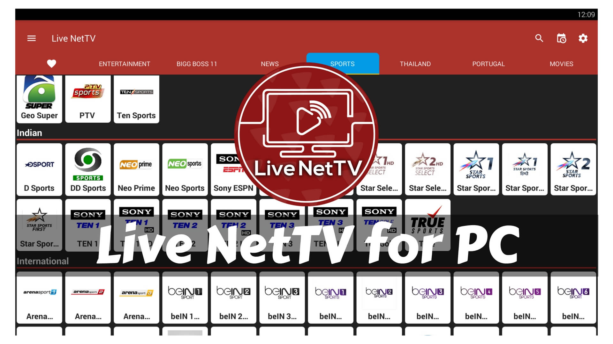

Have you experienced Free Live TV Streaming on a Larger screen? If not, now you can with Live NetTV that works well with your PC and Laptop. The process to watch your favorite Live NetTV channels on any of the windows version 7, 8, 8.1, 10 is made pretty easy with this guide.
Having a much wider screen? No problem at all Live NetTV on Android Box works as well.
Live NetTV for PC
As you all know Live NetTV is a native Android application and installing it on windows requires a special software called Android Emulator.
The installation is a piece of cake. Let me give you a quick glimpse. Install BlueStacks(The Famous Android Emulator), Download and install Live NetTV APK on PC.
Follow our guide to quickly complete the process. All Channels and Categories are supported in the platform as well.
How to install Live NetTV on PC Windows
The installation is easy since Live NetTV requires BlueStacks, Check if your system meets the BlueStacks Minimum Requirements. Getting on with the installation.
- Before we proceed to install BlueStacks. If you ever wonder why BlueStacks instead of other emulators? Here is the answer. BlueStacks is the only application that process and works well on any windows version without compatibility issues.
- Download the BlueStacks.exe file by clicking here.
- Like any other windows application, Install and Open the App.
- Now that’s completed. Now Open the browser and Go to Live NetTV to download the latest version.
- Ensure that you have the latest version of the app to avoid any installation failures.
- Now Open BlueStacks, On the Bottom-Right Corner, Click on the INSTALL APK button.
- A pop-up window opens then navigate to the Downloads folder/directory and find the file Live NetTV.
- Select the file and tap the OPEN button. The livenettv.apk file will begin to install.
- The Live NetTV App will install in no time. A notification from BlueStacks will be sent saying “Live NetTV has been Installed“.
- Now open and start streaming Live TV Channels now without any hassle.
Many of our users have complained about TV Channels when played only displays sound but no video. The main reason behind is that the Video Codec on the device isn’t compatible with the online streams. Live NetTV Firestick version is almost same and doesn’t take much of a space.
In order to overcome that error while playing streams. Here is the solution- “No Video only Audio Error Fixed” from the official site of Live NetTV. Thanks to them it was rectified easily.
Now enjoy streaming on a bigger display and watch free TV Channel streams online. Hope the above method was pretty easy to follow. Having any queries? Feel Free to comment below.
hello i like this upp how to downlods
nice app
I would like to know if there is a specific time zone TV guide listing?
I would like to know what will be coming on each channel at certain times.
Thank you!
latesversion
very nice
exellent